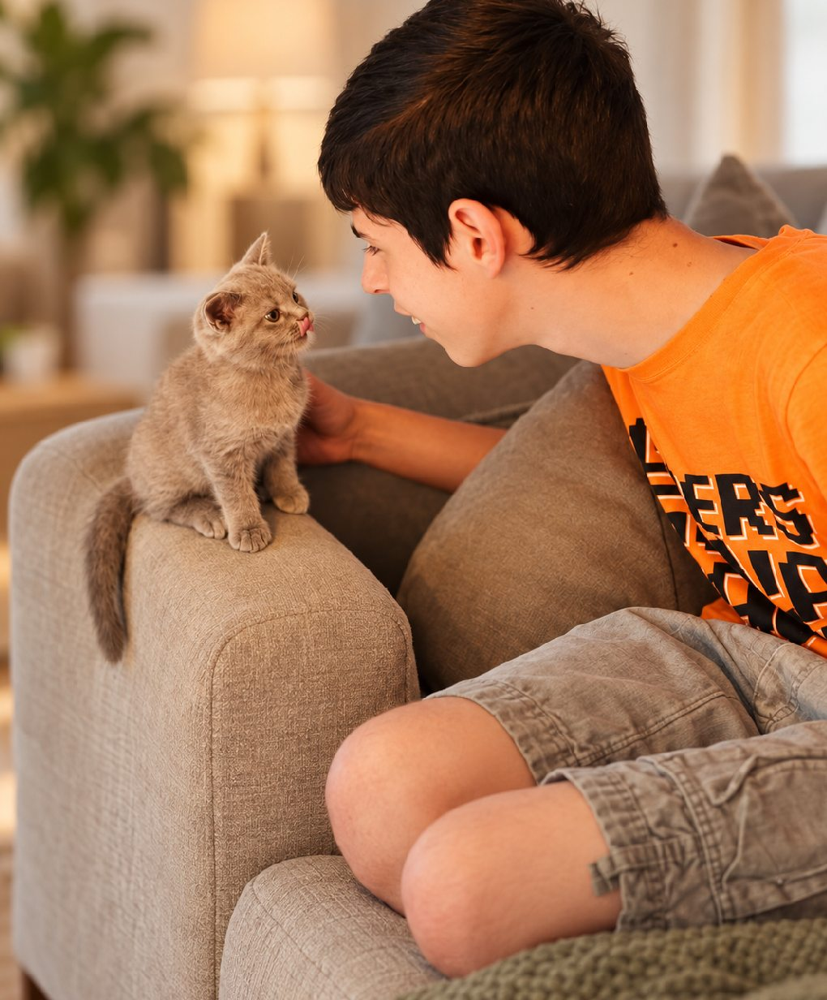

Een plek om bij te horen.
Meer dan zorg. Een kleine, warme familiecontext.


AandachtNatuurVerbinding
Waarom we beginnen
Axel is de reden dat we deze plek opbouwen.
Als mama denk ik aan zijn toekomst: waar kan hij op zijn eigen tempo leven, groeien en zich thuis voelen? Veel gezinnen dragen dezelfde vraag met zich mee.
Met Axel&co willen we een kleine groep vormen waarin jongeren en begeleiders elkaar echt kennen. Huiselijk, vertrouwd en verbonden als een familie, met ouders die er ook bij horen.
Lien Collaer mama van Axel
Een gewone dag.
Een plek die blijft.
Wat nu ontbreekt
Er is veel waardevolle zorg. Toch is het voor gezinnen niet eenvoudig om passende dagbesteding te vinden met aandacht voor het ritme van één jongere, zeker op woensdagen, in weekends en tijdens vakanties. Wij willen daar een warme, persoonlijke plek aan toevoegen.
Wat je bij ons vindt
Een kleine groep met vertrouwde gezichten. Iedereen mag meedoen op zijn eigen manier. We kijken naar wat iemand graag doet en waar hij plezier of vertrouwen uit haalt.
- Dieren verzorgen,
- koken,
- tuinieren,
- iets creatiefs maken,
- of rustig zitten wanneer dat nodig is.
Waarom natuur en dieren
Een dier verwacht geen uitleg of prestatie. Een blik, een aai of samen voeren kan een begin van contact zijn.
Op de boerderij krijgt een kleine taak betekenis en worden krachten zichtbaar die in een drukke omgeving soms weinig ruimte krijgen.
Bouwt u mee?
We zoeken goede doelen en partners die de inrichting van de boerderij, aangepast materiaal, activiteiten en de zorg voor onze dieren mee mogelijk maken. We vertellen graag persoonlijk wat er al is opgestart, wat we nog nodig hebben en hoe uw steun concreet verschil maakt.
Waar uw steun naartoe gaat
- De inrichting van de boerderij
- Aangepast materiaal
- Activiteiten
- De zorg voor onze dieren
Lien Collaer Namens Zorgboerderij Axel&co
Bijna verstuurd
Uw e-mailprogramma is geopend met uw bericht. Klik daar op versturen om het bij Lien te laten aankomen. Opende er niets? Dan staat uw tekst hieronder nog klaar.